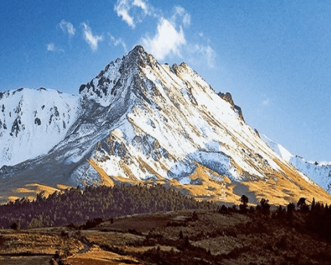

<!DOCTYPE html>
<html lang="es">
  <head>
    <meta charset="UTF-8" />
    <meta name="viewport" content="width=device-width, initial-scale=1.0" />
    <meta http-equiv="X-UA-Compatible" content="ie=edge" />
    <meta name="description" content="Página de inicio de la galeria de arte" />
    <meta name="author" content="Diana Fuerte" />
    <meta name="keywords" content="patria, arte, galeria" />
    <title>Tripleten Art Gallery</title>
    <link rel="stylesheet" href="pages/index.css" />
    <link rel="shortcut icon" href="favicon.ico" />
  </head>
</html>

<body>
  <div class="page">
    <header class="header">
      
      <h2 class="header__title">TRIPLETEN ART GALLERY</h2>
    </header>

    <section class="cover">
      <div class="cover__container">
        <h1 class="cover__title">De patria a patria</h1>
        <p class="cover__subtitle">
          Un viaje épico de Kentucky a Burundi pasando por Gales y Ucrania
        </p>
        
      </div>
    </section>

    <main class="content">
      <section class="content__section">
        <h3 class="content__title">
          Conoce un poco mejor los lugares de los que proceden tus colegas en
          línea
        </h3>
      </section>

      <section class="content__section">
        <blockquote class="content__quote">
          Todo ser humano es un artista, un ser de la libertad, llamado a
          participar en la transformación y reforma de las condiciones, el
          pensamiento y las estructuras que conforman e influyen en nuestras
          vidas.
        </blockquote>
        <cite class="content__cite">— Joseph Beuys</cite>
      </section>

      <section class="content__section">
        <p class="content__text">
          La ciudad de TripleTen ha reunido a profesionales de diferentes
          rincones del mundo. Hoy, la Galería de Arte TripleTen se enorgullece
          de presentar historias y fotografías de algunas de las personas que
          dedican su tiempo y esfuerzo a hacer que los futuros profesionales de
          la tecnología de esta ciudad se sientan como en casa. Cada uno de
          nosotros tiene una historia única sobre el lugar del que procede. No
          dudes en añadir a nuestra colección tu propia historia y una obra de
          arte visual dedicada a tu ciudad natal. No importa de dónde seas, nos
          alegra que seas nuestro vecino.
        </p>
      </section>
    </main>

    <section class="gallery">
      <figure class="gallery__item">
        
      </figure>
      <figure class="gallery__item">
        
      </figure>
      <figure class="gallery__item">
        
      </figure>
      <figure class="gallery__item">
        
      </figure>
      <figure class="gallery__item">
        
      </figure>
      <figure class="gallery__item">
        
      </figure>
      <figure class="gallery__item">
        
      </figure>
      <figure class="gallery__item">
        
      </figure>
    </section>

    <section class="places">
      <article class="place">
        <h2 class="place__title">Cricieth, Gales</h2>
        <h5 class="place__litle-title">Artistas</h5>
        <ul class="place__artists">
          <li class="place__artist">Steffan Warren, editor jefe</li>
          <li class="place__artist">Kseniya Glagoleva, gerente de proyectos</li>
        </ul>

        <div class="place__content">
          <div class="place__media">
            
            <a href="#" class="place__button">Compra esta obra como NFT</a>
          </div>

          <div class="place__description">
            <p class="place__text">
              Las ruinas medievales del castillo de Cricieth dominan la ciudad
              desde una roca que extiende sobre el mar. Se cree que fue
              construido por Llewelyn el Grande en el S. XIII. 800 años después,
              la autodenominada Perla de Gales en las costas de Snowdonia, se ha
              convertido en un popular destino turístico durante los meses de
              verano.
            </p>
            <p class="place__text">
              A pocos pasos de camino al castillo, puedes disfrutar de los
              mejores helados del mundo en Cadwalader's, cuyo ingrediente
              secreto se rumorea que son algas marinas de la localidad. Otra
              cosa por la que es famosa Cricieth es por haber ganado el premio
              *Gales en flor* durante cinco años seguidos por sus espectaculares
              muestras florales alrededor de la ciudad. También vio nacer a
              David Lloyd George, el único galés que ha sido Primer Ministro del
              Reino Unido.
            </p>
          </div>
        </div>
      </article>

      <article class="place">
        <h2 class="place__title">Berea, EE. UU.</h2>
        <h5 class="place__litle-title">Artista</h5>

        <p class="place__artists place__artist">
          Travis Turner, autor y editor
        </p>

        <div class="place__content">
          <div class="place__media">
            
            <a href="#" class="place__button">Compra esta obra como NFT</a>
          </div>

          <div class="place__description">
            <p class="place__text">
              Berea es una pequeña ciudad ubicada en la parte central de
              Kentucky. La ciudad está rodeada por hermosos bosques y campos. Es
              conocida como la capital de la artesanía del estado, y sus
              visitantes hallarán infinitas posibilidades para ir de compras:
              tiendas de joyas, velas y artículos de madera artesanales;
              galerías, talleres de vidrio y más. La ciudad celebra un festival
              anual que rinde tributo al "spoonbread", un platillo local hecho
              de pan de maíz y que se sirve con una cuchara de madera
            </p>
            <p class="place__text">
              Aunque, probablemente es mejor conocida por su universidad. El
              Berea College fue fundado en 1855 y fue la primera universidad
              sureña integrada racialmente, así como la primera en ser
              coeducacional. Algo que en cierta manera la hace única, es que no
              cobra colegiatura: cada estudiante recibe una beca del 100%.
            </p>
          </div>
        </div>
      </article>

      <article class="place">
        <h2 class="place__title">Muramvya, Burundi</h2>
        <h5 class="place__litle-title">Artista</h5>
        <p class="place__artists place__artist">
          Grevisse Kenguruka, editor técnico
        </p>

        <div class="place__content">
          <div class="place__media">
            
            <a href="#" class="place__button">Compra esta obra como NFT</a>
          </div>

          <div class="place__description">
            <p class="place__text">
              Muramvya es una de las 18 provincias de Burundi. Durante la época
              del reino, Muramvya fue su capital; y en 2017, gracias a su
              paisaje cultural y natural, se añadió a la Lista provisional de
              patrimonio mundial de la UNESCO. Se encuentra ubicada en el centro
              de Burundi, entre las capitales política y económica del país.
            </p>
            <p class="place__text">
              Su clima es más bien frío durante la noche, pero durante el día,
              podrías pensar que estás en el paraíso. A sus 2,665 metros (8,743
              ft) sobre el nivel del mar, el Monte Teza es uno de los lugares
              más fríos de la provincia. Pero es justo esa brisa fresca la que
              da pie a una de las más grandes plantaciones de té y café del
              país, y que representa la mayoría de las exportaciones de Burundi.
            </p>
            <p class="place__text">
              El Parque nacional de Kibira, una de las mayores reservas de vida
              silvestre para los simios, ocupa parte de cuatro provincias,
              incluyendo Muramvya. Este parque nacional se encuentra en las
              cúspides de las hermosas montañas de la Divisoria Congo-Nilo,
              cuyas alturas oscilan entre 1,550 y 2,660 metros. Está lleno de
              hermosa vegetación, y es una fuente para los diversos ríos y
              arroyos que proporcionan agua alrededor del país
            </p>
          </div>
        </div>
      </article>

      <article class="place">
        <h2 class="place__title">Estado de México</h2>
        <h5 class="place__litle-title">Artista</h5>
        <p class="place__artists place__artist">
          Diana Fuerte, desarrolladora web
        </p>

        <div class="place__content">
          <div class="place__media">
            
            <a href="#" class="place__button">Compra esta obra como NFT</a>
          </div>

          <div class="place__description">
            <p class="place__text">
              Visitar los volcanes del Estado de México como el Nevado de Toluca
              es una experiencia que ofrece paisajes espectaculares y
              actividades al aire libre, como alpinismo y senderismo. Se trata
              de un volcán dormido con lagos en su cráter, ideal para un fin de
              semana. En contraste, el Popocatépetl es un volcán activo, su
              visita no está permitida cerca del cráter por su peligrosidad, y
              la observación se limita a zonas seguras como Amecameca o el Paso
              de Cortés.
            </p>
            <p class="place__text">
              Entre las actividades por hacer, estan el senderismo, alpinismo,
              campismo y ciclismo de montaña, siendo un sitio para entrenamiento
              deportivo; claro, siempre y cuando manteniendo la siguientes
              recomendaciones: llevar ropa adecuada, calzado apropiado,
              suficiente agua y alimentos energéticos, y respetar las señales de
              advertencia. Además, es importante considerar la altitud y el
              clima, ya que las condiciones pueden cambiar rápidamente.
            </p>
          </div>
        </div>
      </article>
    </section>

    <footer class="footer" id="footer">
      <p class="footer__text">© 2025. Diana Fuerte</p>
    </footer>
  </div>
</body>
